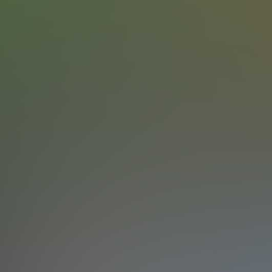

Ano de 2024
Reuniões Teocráticas
Designações das Partes na Reunião do Meio de Semana e Discursos Públicos

Ano de 2024
Programação do Serviço de Campo
Dias de Campo e Dirigentes e Programação do Testemunho Público
